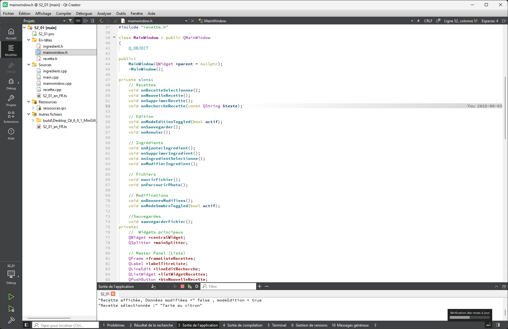
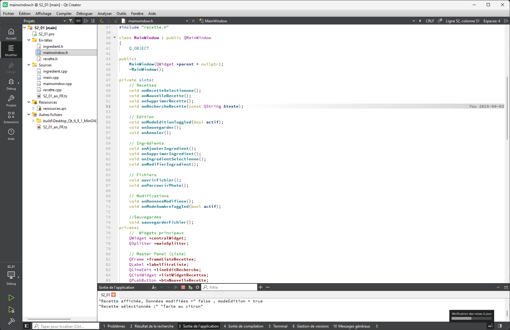
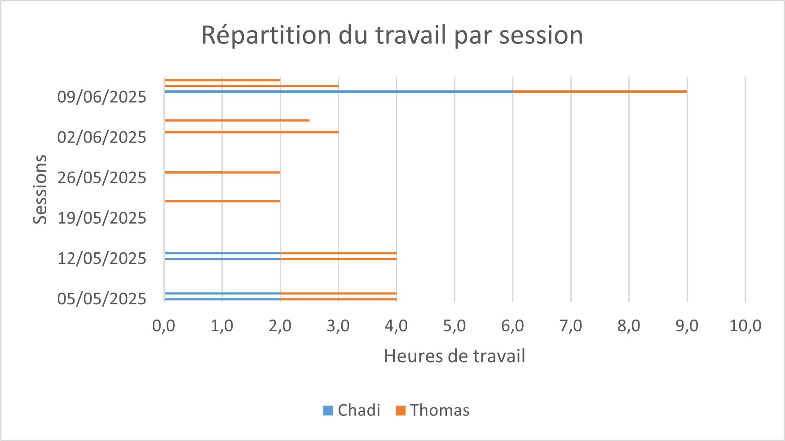
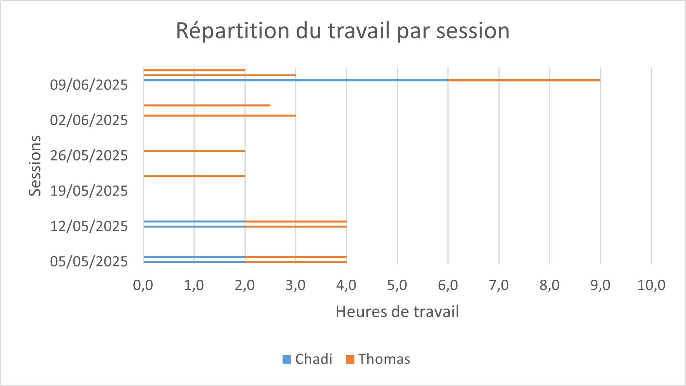

Thomas Poissonnier
Pourquoi vous voudrez travailler avec lui ?
Développeur logiciel - Gestionnaire de base de données - Gestionnaire de projets
Développeur logiciel - Gestionnaire de base de données - Gestionnaire de projets
Mon Parcours
2019/2022 : Baccalauréat Général au lycée Ismaël Dauphin, Cavaillon
2022 : Un semestre en classe préparatoire PTSI (Physique, Technologie, Sciences de l'Ingénieur) à LaMartinière Monplaisir, Lyon
2023 : Un semestre à l'Université d'Avignon en licence d'Informatique
2023/2026 : BUT Informatique à l'IUT d'Aix-Marseille site d'Arles
Ce que je peux vous apporter
Un profil jeune et polyvalent qui sait travailler de manière autonome. Avec de bonnes capacités d'apprentissage, je suis capable de m'adapter à de nombreuses situations.
Mes axes de progression
Il m'arrive souvent de ne pas assez me faire confiance, de vérifier une information que je connais déjà ou de mettre en doute un travail que je sais faire. Aussi, si vous cherchez un profil avec un sens aigu de l'esthétisme, ce n'est clairement pas mon profil.


Algorithmes avancés, framework Qt, gestion de la mémoire
Requêtes complexes
Programmation orientée objet, projets académiques
Bases du développement web, design responsive
Développement d'interfaces graphiques
Contrôle de version, développement collaboratif
Modélisation de systèmes, cas d'usage, diagrammes de séquence
Gestion de projet Agile
Dijkstra, algorithmes de tri, analyse de complexité
Modélisation de données, requêtes
Conception modulaire
Diagrammes UML, spécifications
À l'aise pour diriger ou suivre selon les besoins
Apprentissage auto-dirigé et résolution de problèmes
Intégration rapide dans de nouveaux environnements
Documentation et reporting clairs
Passionné par les sports collectifs depuis tout petit, ils sont ma principale passion. J'ai joué au football pendant longtemps puis j'ai évolué pour commencer le basket, où je joue et entraîne une équipe de jeunes depuis quelques années. Je pratique également le trekking et la randonnée quand c'est possible. Ce sont des activités que j'aime pratiquer avec des amis, au même titre que le billard et la pétanque. J'apprécie aussi la lecture, en particulier la science-fiction (Asimov, Dick,...) et les récits mythologiques (originaux ou réinterprétés comme les romans de Rick Riordan).
Mail professionnel : poissonnierthomaspro@gmail.com
Mail étudiant : thomas.poissonnier@etu.univ-amu.fr
Portable : 07-68-08-70-88


 

 
